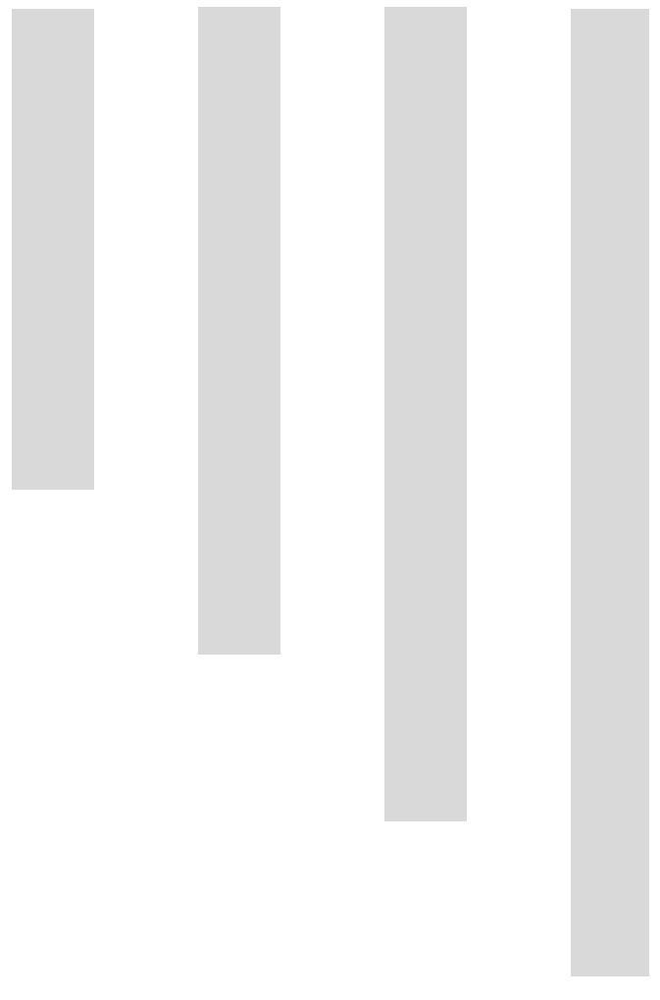

<div class="bg-container h-100 w-100">
    <app-navbar></app-navbar>
    <h1 style="text-align: center; margin-top: 2%; color: white; font-size: 35px;">{{'Music Section' | capitalizeFirst}}</h1>
    <div class="contain">
        <div class="buttons">
            <button type="button" class="btn btn-primary" style="margin-bottom: 1%;" [routerLink]="'/last-song'">Last Top Songs</button><br>
            <button type="button" class="btn btn-primary" style="margin-bottom: 1%;" [routerLink]="'/all-time-song'">My All Time Top </button><br>
            <button type="button" class="btn btn-primary" [routerLink]="'/willing-to-listen'">Willing To Listen</button><br>
        </div>
        <table>
            <tr>
                <td style="text-align: left;">
                    <!-- Az első kép a bal alsó sarokban -->
                    
                </td>
                <td style="text-align: right;">
                    <!-- A második kép a jobb alsó sarokban -->
                    
                </td>
            </tr>
        </table>
    </div>
</div>